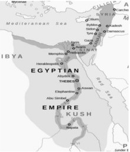

Even this foundational myth of the Jewish religion is riven with invention and inconsistencies:
First of all, there is no evidence of any type that the Israelites were ever slaves in Egypt in the first place. They may have been: a) members of a the Canaanite immigration in advance of the Hyksos invasion of Egypt (around 1650 BC); b) even Hyksos themselves, since the Hyksos are suspected to have been of Hurrian origin (Abraham’s birthplace). Indeed Josephus identifies the Exodus with Manetho’s report of the emigration of 480,000 Hyksos “shepherd kings” from Egypt to Jerusalem (c 1550 BC). Apion even alleges that the heretic priest Osarseph changed his name to Moses and led a rebellion against Egypt. As archaeologist Jacquetta Hawkes states, “…they were wandering groups of Semites who had long come to Egypt for trade and other peaceful purposes;” or c) perhaps they were opportunistic members (habiru) of the coalition of the Sea Peoples (1200-900 BC), who devastated the Mycenean world until stopped (and enslaved?) by Egypt.

Egyptian Empire 1500-1200 BCE